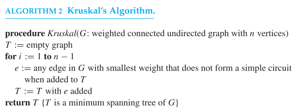
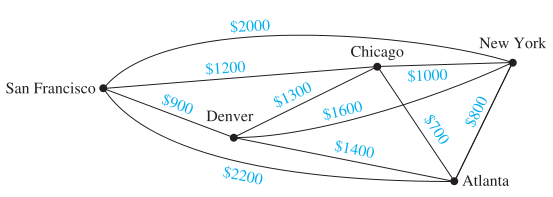
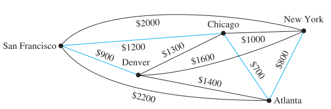
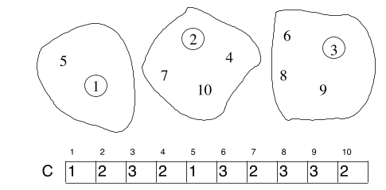
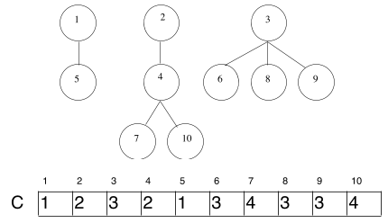
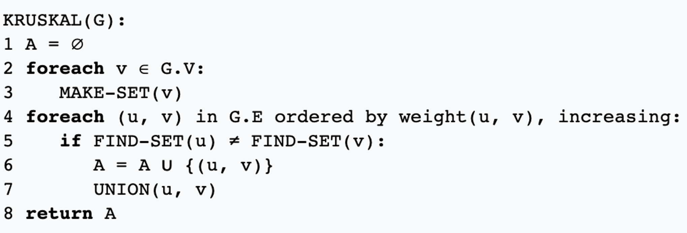

Algoritmo de Kruskal#
¿Cómo funciona el algoritmo de Kruskal?
Se elige una arista del grafo con el menor peso.
Se van añadiendo aristas de menor peso siempre que no formen ciclos con las ya seleccionadas.
El proceso termina cuando se han seleccionado \(n - 1\) aristas.
Pseudocódigo del algoritmo de Kruskal#

Consideraciones importantes#
Si existen varias aristas con el mismo peso, la elección debe hacerse de forma determinista (por ejemplo, ordenándolas).
Puede haber más de un árbol generador mínimo para un grafo conexo y ponderado.
Ejemplo de ejecución#

Elección |
Arista |
Coste |
|---|---|---|
1 |
{Chicago, Atlanta} |
700 |
2 |
{New York, Atlanta} |
800 |
3 |
{San Francisco, Denver} |
900 |
4 |
{Chicago, San Francisco} |
1200 |

Interpretación alternativa del algoritmo#
Inicialmente se crean \(|V|\) árboles (uno por cada vértice).
En cada iteración se toma la arista de menor peso restante \((u, v)\).
Se verifican los conjuntos (árboles) que contienen a \(u\) y \(v\).
Si pertenecen a conjuntos distintos, se unen (sin formar ciclos).
Nota No se forman ciclos porque solo se conectan árboles disjuntos.
Estructura de datos: Conjuntos disjuntos (Union-Find)#
Es una estructura que mantiene una colección de conjuntos disjuntos.
Cada elemento pertenece a exactamente un conjunto.
Soporta tres operaciones principales:
Operación |
Descripción |
|---|---|
|
Crea un conjunto que contiene solo el elemento |
|
Devuelve el conjunto (o la raíz) al que pertenece |
|
Une los conjuntos que contienen |
Representación de conjuntos disjuntos#

Los elementos se numeran de \(1\) a \(n\).
Cada conjunto tiene un representante (por ejemplo, el elemento más pequeño).
Se mantiene un vector de representantes, donde cada posición indica el conjunto al que pertenece el elemento.
Implementación con listas enlazadas#
Se usan listas enlazadas para representar los conjuntos.
El arreglo de representantes indica a qué conjunto pertenece cada elemento.
makeset(x): crea la lista y el arreglo.find(x): accede al arreglo.union(x, y): une las listas y actualiza los representantes.
Implementación con árboles#

Cada conjunto se representa con un árbol, cuya raíz es el representante.
Se usa un vector de padres, donde
p[i]almacena el padre del elementoi.Si
ies raíz, entoncesp[i] = i.find(x): busca la raíz del árbol que contienex.union(x, y): une los árboles haciendo que una raíz apunte a la otra.
Unión por alturas (Union by Rank)#
Las uniones se realizan evitando incrementar la profundidad del árbol.
El árbol menos profundo se convierte en subárbol del más profundo.
La altura solo aumenta si se unen árboles de igual altura.
Pseudocódigo general del algoritmo#
